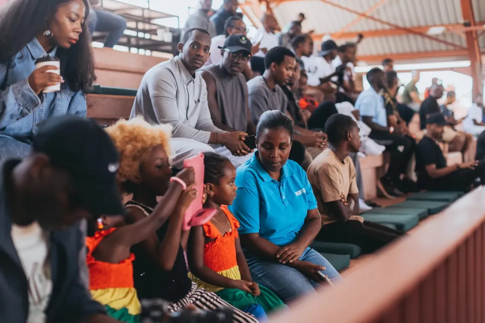

Frequently asked
Everything,
answered
plainly.
Memberships, payment, opening hours, training, hikes and the championship. If something is missing, call or message — a person will answer.
01
Memberships & payment
Memberships & payment
How do I join WAKA?
Either join online through the WAKA portal, or walk into any club and sign up at the front desk. Both take minutes and neither requires an appointment.
How much does a WAKA membership cost?
Live prices are published in the WAKA portal and quoted at the front desk in RWF. As a guide, a day pass has historically been around $8 and monthly gym membership from around RWF 28,000.
Can I pay at the club instead of online?
Yes. Mobile money, card and cash are all accepted at the front desk at every club. There is no penalty for paying in person and no prior booking is required.
Is there a joining fee or induction fee?
No. You pay for the membership you choose and, if you want it, for coaching.
Does one membership cover all three clubs?
An annual membership gives access to all three clubs. Monthly memberships are tied to a home club, with the option to train elsewhere for a supplement.
Can I freeze or cancel my membership?
Monthly memberships can be cancelled with notice before the next renewal. Freezes are considered case by case — speak to the front desk or email info@wakaglobal.com.
Do you offer corporate memberships?
Yes. WAKA builds corporate plans combining desks and gym access for teams, with consolidated invoicing. Email info@wakaglobal.com with your headcount.
02
Clubs & opening hours
Clubs & opening hours
How many WAKA clubs are there?
Three in Kigali: WAKA Town downtown, WAKA Kimihurura and WAKA Kibagabaga.
What time do the clubs open?
WAKA Kibagabaga opens at 05:00 on weekdays. WAKA Town and WAKA Kimihurura open at 05:30. Weekend openings are 06:00 at Kibagabaga and 08:00 at the other two.
Which club has the coworking space?
WAKA Town, downtown, on the 5th floor of the Makuza Parking Building. It also has the café, the climbing wall, the basketball court and the event space.
Is there parking?
Yes — in the Makuza building at WAKA Town, and free on-site parking at WAKA Kibagabaga. WAKA Kimihurura has street parking on KG 674 Street.
Is WAKA Kibagabaga the old Cali Fitness?
Yes. The Kibagabaga club operated as Cali Fitness before joining WAKA, and the coaching team stayed with it.
03
Training & coaching
Training & coaching
What training is available at WAKA?
Open gym strength and conditioning, functional fitness classes, the 06:30 bootcamp, personal training and competition prep. WAKA Town also has an indoor bouldering wall.
I have never lifted before. Can I still train at WAKA?
Yes. Group sessions are scaled for all levels and coaches will walk you through the movements. If you are completely new, book one coached session to start.
Do I need to bring equipment?
No. Bars, plates, dumbbells, kettlebells, rigs and cardio machines are provided. Bring shoes, a towel and water.
Can I get a personal trainer?
Yes, at every club. Book directly with the club — WAKA Kimihurura 0794 106 015, WAKA Town 0785 379 577, WAKA Kibagabaga 0788 797 009.
04
Events & hikes
Events & hikes
What events does WAKA run?
Guided hikes across Rwanda through the year, and WAKA The FITTEST, the national functional-fitness championship held each August at Zaria Court.
How much is a WAKA hike?
15,000 RWF per person, covering the return bus from Kigali, the guided route and the group briefing. Pay online or at the club.
Where do hikes leave from?
WAKA Kimihurura — Papyrus House, 18 KG 674 St — at 04:30. Groups are back in Kigali the same afternoon.
Do I need to be a member to join a hike or The FITTEST?
No. Both are open to anyone. Members get earlier announcements and priority booking.
When is the next WAKA The FITTEST?
The 2026 edition was held on Saturday 1 August 2026. The fourth edition is expected in 2027, with the date announced on Instagram and the FITTEST site.

Come and see
Questions are
easier in person.
Any of the three clubs, any weekday from 05:30. No booking needed for a tour.